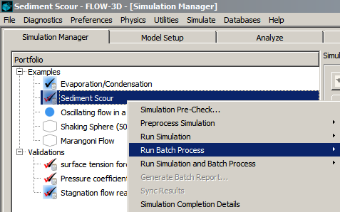

Post-processing¶
Post-processing in FlowSight¶
The primary reference for using FlowSight is the the FlowSight user manual that is accessed from the menu in FlowSight.
Batch post-processing¶
Batch post-processing enables users to define a set of post-processed results
they would like to generate in the background while a simulation is running or
after it is completed. Upon completion, report generation can be run to
combine the results into an HTML file for viewing in a web browser.
Batch post-processing works in conjunction with results generated by FlowSight
only.
Batch post-processing requests are created by clicking on the Batch Post-Processing button located on the Output panel.
Once selected, the simulation directory is checked for the existence of a
either a preprocessing file (prpgrf.*) or a simulation results file
(flsgrf.*). This is how the available variables are determined in the
data catalog. If both files exists the user is prompted to select which file
to extract the data catalog from as shown here.
Upon a data catalog having been read from the prpgrf.* or
flsgrf.* file, a dialog message is shown indicating success
Batch post-processing can be run in two different modes depending on whether the results file exists. If the results file is present then it may be configured from scratch using the Active Batch Tab otherwise it can only use context files and user-defined templates (see Load from User Template Tab) to define what to plot.
Active Batch Tab¶
The Active Batch tab is where new plot requests are defined for the batch mode and is only available if the results file already exists. The contents of the active batch dialog are saved
to the simulation directory as a template file named bat_f3d."project
name".
Note
Even though bat_f3d."project name" is a readable ASCII file it should not be modified by the user.
Creating Graphic Results¶
A graphic result is created by clicking on the ( ) icon. This creates a listing under the graphic name
window. Multiple graphic results can be created. Each must be of one of the
following type:
) icon. This creates a listing under the graphic name
window. Multiple graphic results can be created. Each must be of one of the
following type:
The Graphic Name window displays the graphic result requests
generated by the user. Each graphic result request will be shown in the order
created. Note: The contents of the active batch dialog are saved to the
simulation directory as a file named bat_f3d.<simulation name>.
For each graphic result there are various forms of Output Type available depending on the result requested. Shown here are the possible outputs for each graphic result. A green check means the output type is available. A more detailed explanation of each is provided below.
3D¶
3D graphic results create 3D views that may contain one or more of the following objects:
Each individual object in the 3D graphic result has a Settings button to configure the object settings (color variables, legend options, etc.). Many settings are optional but the required fields are displayed in red. Additional objects (iso-surfaces, volume renders, etc.) may be added to the existing 3D graphic result by higlighting the 3D graphic result and using the associated Create button, e.g., . All of the objects (iso-surfaces, etc.) within a 3D graphic request are represented in the same image or animation. Note that objects in 3D Graphic Results are displayed in 3D with respect to the orientation of the view file.
As an example, a 3D graphic request composed of (1) a iso-surface with transparency and (2) a iso-surface will show the fluid in a transparent die cavity.
Data can be output in the form of animations (), scenario files (), and/or images (). All three types of data output require a view file to set the orientation and zoom factor. View files simply store the current point-of-view and are created using the View Manager () on the Model Setup tab. The timeline for the output can be or data and Comments are optional.
2D Contour¶
objects can consist of different objects presented in a planar view. Data can be output in the form of animations (), scenario files (), and/or images (). The timeline can be or data and Comments are optional.
History Plot¶
The option creates a graphic image of the quantity selected under the Settings button. A plot style file to give the plot a desired look is optional. Plot style files can be saved by selecting an existing rendered graph in FlowSight and saving it. The file will then be available for loading in the Settings button.
Text Result¶
A is for writing an ASCII data file
containing General History data. The Settings button
opens a dialog for choosing the data to write.
Context File¶
are used to load and restore a rendering configured in FlowSight. This can consist of any object available such as isosurface, plot, etc. A context file can be created via . Once created, it can be applied to a result data using either of the following approaches:
- Select the Apply context option in the File open dialog. This will load all the settings recorded in the selected context file as the result file is being loaded.
- If a result file has been already loaded into FlowSight, select option.
Creating and Appending to Templates¶
Once the Active Batch Tab is configured the settings can be saved to a new or an existing template for later use on other simulations. A new template for use can be created from the list of graphic results requests under the Graphic Name window by selecting the Create New Template From Batch button. Alternatively, if there is an already existing template file the list of graphic result requests under Graphic Name window can be exported to an existing template by selecting the Export Batch to Existing Template button.
Load from User Template Tab¶
All templates created appear in this tab. To load a template, left-click to highlight it, then select the Import To Active Batch button. When returning to the Active Batch tab the graphic requests will be loaded. If other results already exist these will be appended.
Running Batch Processes¶
Once defined, there are two options for running batch processes; 1) Run only the batch process after a simulation is completed through the menu in the Simulation Manager for the given simulation, 2) Run a simulation followed by batch process automatically when a simulation is completed through the .

While generating the results the batch progress is displayed in the
Queue and the Simulation Information window. Upon
completion all requested data is written to a directory within the working
directory in which the simulation was run. The folder name will start with the
name, Report with the name of the working directory of the simulation
appended.
Report Generation¶
A web based report is an html file format based report able to be
opened in a web browser. Images and animations are embedded into the report
based on batch post-processing graphic results requests. A report can be
created after defining and creating batch graphic requests and running a batch
process, at which point the menu option
becomes available.

This menu option opens a Custom Report Tool dialog for creating the report. Title, Authors, and Organization entries appear at the top of the report.
Each graphic result generated after running a batch process will appear in the Custom Report Tool dialog in the Graphics Include section. By default all graphic results created are populated in this section. In the Graphics Include section:
- Unchecking a result in Selected section will remove it from the report to be created.
- Captions can be added below each graphic item in the report by selecting the pencil () icon.
- The delete (
 ) icon will remove the graphic entirely
from the listing. It is important to note that deleting a graphic result
requires rerunning a batch process to regenerate it.
) icon will remove the graphic entirely
from the listing. It is important to note that deleting a graphic result
requires rerunning a batch process to regenerate it.
The buttons below the Graphics Include window enable the user to reorder graphic results, add a paragraph, Generate, Open Report, or Delete a report.
Post-processing in FLOW-3D¶
There are two types of graphics plot files generated by FLOW-3D : Existing and Custom.
- Custom Plots: Custom plots are the primary way in which analysts interact with the data generated by FLOW-3D . The user-defined settings on the Analyze tab define what is plotted, with options for creating 1D, 2D, and 3D plots as well as several options for outputting data in different text formats.
- Existing Plots: Existing plots are automatically generated by both the
preprocessor and the solver. The preprocessor output is named
prpplt.extand contains plots of the computational grid, history plots of time varying setup parameters such as component power dissipation, and plots of shear dependent properties. The solver output file is namedflsplt.extthat contains graphics defined by the user manually in theGRAFICnamelist in the simulation file. The variables specified in theGRAFICnamelist to create existing plots are listed in Plot Request Variables.
Existing Plots¶
Once the preprocessor has been run on a particular simulation, the
prpplt.ext file will be available for display. Similarly, after a
simulation completes the flsplt.ext file will be available for
display.
To open either file (after the preprocessor or solver has completed), go to
the Analyze tab, select the Open Results File button,
and select the Existing radio button on the file dialog. The
prpplt.ext and flsplt.ext files will appear in the dialog.
Select the desired file and click OK. A list of available plots
appears in the Control Panel on the right-hand side of the screen.
Plots may be viewed by clicking on the name in the list or by using the
Previous and Next buttons. Various aspects of a plot,
such as background and foreground color, line thickness, vector length, and
particle size can be changed by selecting options under the Format
button.
The plot file flsplt.* (existing solver plots) is particularly useful
because it contains plots such as forces in sampling volumes, history point
plots, and any other plots predefined in the GRAFIC namelist in the project
file.
Generating Custom Plots¶
Custom plots are created based on user-defined settings on the Analyze tab. There are options for creating 1D, 2D, and 3D plots, several options for outputting data in different text formats, and some options for transformations to average, multiply by a constant, and integrate/differentiate the data. Each of these options will be discussed in more detail in the subsequent sections; links are provided here for convenience.
- Probe: Data at a Point vs. Time
- 1-D: Data Along a Line vs. Time
- 2-D: Data in a Plane vs. Time
- 3-D: Data on a Surface vs. Time
- Text: Spatial Data Output in ASCII Format vs. Time
- Neutral File: Spatial Data Output at User-defined Coordinates vs. Time
- FSI / TSE: Structural Data on Surfaces vs. Time
- Customizing Plots Using the FLSINP File
To open either a preprocessor output file after the preprocessor or solver has
completed, go to the Analyze tab, select the Open
Results File button, and select the Custom radio button on the
file dialog. If only the preprocessor was run then the prpgrf.ext
will be available; otherwise the flsgrf.ext file will appear in the
dialog. Select the desired file and click OK.
The procedure for creating a plot is quite similar for each type of plot, so a general outline is given below. Specific options for each plot type are discussed in the associated section.
- Open the desired result file (either
prpgrf.*orflsgrf.*). - Choose the desired plot type (e.g., 1-D, 2-D, etc.).
- Select a data source. Most plot types give a choice of restart, selected, or solidification data, though the Probe plots can be used with additional data types.
- Choose which mesh blocks should be included in the plot.
- Choose what variable(s) to plot.
- Define how to plot the variable(s) (e.g., a color contour of the pressure in fluid #1).
- Define the extents of the plot. In some cases with Probe plots the extents of the plot are not used.
- Define any supplemental options.
- Choose whether any Units should be displayed.
- Choose Render.
It is possible to open a result file and view the results while a simulation is running. Then, as more time edits become available, the Reload results file button can be used to refresh the data and make the more recent time edits accessible for plotting. However, the Reload results file button is intended only for reading additional time edits from a results file and should not be used if the input file was changed since the results file was opened.
Probe: Data at a Point vs. Time¶
Probe plots are of a single quantity as a function of time. These can be created from restart data, general history data, mesh-dependent data (boundary conditions), or solidification data. As such, the widest range of quantities are accessible on the Probe tab. Some examples are:
- Spatially-varying quantities (e.g., pressure, temperature, etc.)
- Diagnostic quantities (e.g., stability limits, residuals, iteration counts, etc.)
- Bulk quantities (e.g., average component temperatures, total fluid volume, etc.)
- Moving object data (e.g., center of mass location, angular velocity, etc.)
- Boundary condition data (e.g., XMIN boundary flow rate, etc.)
For all data types there is an option to control whether the output is a
graphical plot or in a standard ASCII text format.
Additional options are available for integrating, differentiating, and averaging the data in
time when plotting general history and mesh-dependent history data.
- - Integrate the data points of selected variable over time.
- - Differentiate the data points of selected variable with respect to time.
- - Analyze data points by creating a series of averages of different subsets of the full data set, which is defined by Stencil radius for averaging. For instance, given a stencil radius of 2, two data points on either side of a target data point will be used for average calculation.
1-D: Data Along a Line vs. Time¶
1-D plots show the variation of one variable (the ordinate) in a coordinate direction (the abscissa) at a particular time. For example, this feature would be used to generate a series of plots of the pressure (the ordinate) in the z-direction (the abscissa) along the line (x=0, y=5) at different times. When defining how to plot the selected variable (step 6 of Generating Custom Plots), just select which coordinate direction to use as the independent variable (e.g., Y-direction).
2-D: Data in a Plane vs. Time¶
2-D plots show the variation in a parameter (the color) versus two spatial variables at a given time. For example, this would be used to generate a plot of the temperature variation in both the x and y-directions at a specified z-coordinate at different times. To define how to plot the selected variable (step 6 of Generating Custom Plots):
- Select the plane in which to plot the data.
- Define the contour options.
- Choose the Contour type. There are options for (gives filled contour plots), black and white contour lines, colored contour lines, and color shaded with contour lines. If one of the options with contour lines is selected, define the Number of contours (the number of lines to draw).
- Define the Contour limits (the minimum and maximum values of the color scale). uses the minimum and maximum values of the current time frame, uses the minimum and maximum values of all of the plotted time frames, and limits the color scale to the specified values.
- Set the Contour Options. No contour smoothing colors each cell with a single color, rather than blending colors to give smoother plots. This is useful for debugging. Blanking refers to a criterion used to determine cells that should be colored and cells that should show the background color (blanked). The Blanking variable is used to set the criterion to blank cells. For example, if the Blanking variable is set to , the Value is 0.5, and the Range is will color only cells where the fluid fraction is less than 0.5, so all voids would appear as the background color.
- Choose the Vector type to add plain or colored velocity vectors.
- Choose how frequently to plot vectors (listed under Vector Options). This is an integer input that denotes how many cells to skip between vectors. For example, a value of 3 indicates that a vector is plotted for every third cell.
- Choose the Vector length in the Scaling area. Selecting the Common option sets the minimum and maximum vector lengths based on the minimum and maximum velocities in all plotted time frames. Otherwise, the vectors will be re-scaled based on the minimum and maximum velocities at each output time. The Scaling factor magnifies all velocity vectors by this amount.
- Choose how to plot any particles in the Particle type area.
- Choose whether to mirror the plot about the origin in a particular direction using the Symmetry options.
3-D: Data on a Surface vs. Time¶
3-D plots show the variation in a parameter (the color) on a surface at a given time. For example, this would be used to generate a plot of the temperature variation on a fluid surface. To define how the selected variable is to be plotted (step 6 of Generating Custom Plots):
- Define the surface on which to plot the data.
- Choose the variable to create the Iso-surface (a surface of constant value). For example, selecting will draw a surface encompassing all cells with a fluid fraction greater than or equal to the specified Contour value. If were selected, the surface would enclose all cells with a fluid fraction less than or equal to the specified Contour value.
- Choose the Contour value in the Iso-surface options. The default value is 0.5.
- Choose how to color the surface.
- Select what variable to use for coloring the surface in Color variable.
- Additional color variables can be selected in the Additional variables box. These can be viewed one at a time on the Display tab.
- Define the Contour limits (the minimum and maximum values of the color scale). uses the minimum and maximum values of the current time frame, uses the minimum and maximum values of all of the plotted time frames, and limits the color scale to the specified values.
- Choose other iso-surface options.
- Choose whether to show any iso-surfaces related to the components in the Component iso-surface overlay area. draws a surface encompassing all cells with a volume fraction greater than or equal to the specified Contour value. If were selected, the surface would enclose all cells with a volume fraction less than or equal to the specified Contour value. This would draw a surface around all components.
- The STL checkbox will overlay the original
STLfiles used to define the geometry. This is useful for presentations, since theSTLgeometry often looks nicer than the solid iso-surfaces. - The Open symmetry boundaries option draws the iso-surfaces without closing the surface on symmetry boundaries. This gives eliminates the seam that would otherwise be present when iso-surfaces are mirrored to show symmetric geometries.
- The Render frames to disk and Append to existing output options are used when combining results files from a restart source simulation and a restart simulation. For more detail, see Combine 3-D plots.
- Choose other Options, including the display of vectors and streamlines.
- If vectors were selected, the Vector Options give control over how frequently to plot vectors. This is an integer input that denotes how many cells to skip between vectors. For example, a value of 3 indicates that a vector is plotted for every third cell. Also, where the vectors will be plotted can be controlled independently of the iso-surface in this dialog.
- The streamline seeding activates a setup option that occurs on the Display tab. More discussion about this option can be found in the Viewing and Manipulating Plots section.
- Choose which display to use to render the results in Display options. Each display can show the results for one simulation so results can easily be compared by rendering the results of different simulations to different displays.
Text: Spatial Data Output in ASCII Format vs. Time¶
The FLOW-3D GUI can be used to generate text output in ASCII format. To generate
text output, click on the Results button, then select
Custom. Select the desired flsgrf file. Then go to the
Text Output tab. First select the desired Data Source
Then, select the variables to be written out, the
spatial range for the data, and the time.
If the spatial range specified is 3-D, then the data will be written out in 3-D format (x, y and z values followed by the requested data). If a 2-D data range is requested (i.e., the minimum and maximum limits are identical for one dimension), then the data is written out in 2-D format (the constant variable is written above the rest of the data, then on each line the other 2 coordinates are written, followed by the requested data). Similarly, if a 1-D or zero-D data range is requested, the data is written out appropriately.
Note
- The requested text output data is written to file
flslnk.tmp. This file is a temporary file and is automatically deleted when the custom results panel is closed. Therefore, the user must use the Save As button to write the data to a permanent file if the text output is to be saved.
See also
See Spatial Data for descriptions of the different data types.
Neutral File: Spatial Data Output at User-defined Coordinates vs. Time¶
The FLOW-3D GUI can be used to export what
is known as “neutral file data.” A “neutral file” contains FLOW-3D results at
user specified locations in a simple ASCII text format so that it can be
transferred to other analysis packages or used in a report. The
neutral file exporter reads in a list of coordinates from a user-provided
file, and then writes out the requested FLOW-3D results at those coordinates.
The formats of the “coordinate file” and the “neutral file” were chosen so
that they share a common layout. The name of the coordinate file must be
transf.in, and the name of the neutral file is transf.out.
To generate neutral file data first create the coordinate file,
transf.in, using a text editor following the format shown in
The Coordinate File Format section. The coordinate file should be located in
the same directory as the custom results file (e.g., flsgrf.*) from
which the data is to be extracted. Next (in the GUI), click on the
Analyze tab, open the desired Custom results file
flsgrf.*, and go to the Neutral File tab. Select the
variables to be included in the neutral file output, the spatial range for the
data, and the times of interest. You may also choose to have the data
interpolated to the coordinate points or to use the nearest FLOW-3D cell-
centered data. In the event that multiple FLOW-3D meshes exist, the results can
be merged after creation or multiple meshes can be selected prior to rendering.
Next, select Render and the results will be written
to the transf.out file located in the same directory as the
transf.in file. The format of the transf.out output file
is discussed in The Neutral File Format section.
The Coordinate File Format¶
A typical coordinate file is shown below. This file is read by FLOW-3D using a
free format. The name of the coordinate file must be transf.in, and
this file must be in the working directory.
All of the lines before the -1 marker line are optional title lines. The -1 flag indicates the beginning of the coordinate information.
Optional title line 1
Optional title line 2
Optional title line 3
-1
0
0.0 0.0 0.0
3.199 0.5 1.5
3.50 0.5 1.5
.
.
.
1.0 0.25 2.5
1.0 0.25 2.999
The zero on the line immediately following the -1 is a placeholder. In a neutral file, this line contains significant information, so the placeholder is included here for consistency. The line following the placeholder contains the minimum x, y and z mesh coordinates. This information is not used for generating a neutral file; however, it may be necessary for interpreting a neutral file in FLOW-3D . Following the minimum-mesh-coordinates line, are the actual coordinates (x, y and z) for which data is to be generated. FLOW-3D processes the coordinates using single precision.
The Neutral File Format¶
A typical neutral file is shown below. The name of the neutral file is
transf.out.
FLOW-3D problem title
time=5.01343870e+00
neutral file output
-1
2 tn tw
0.00000000e+00 0.00000000e+00 0.00000000e+00
3.49900007e+00 5.00000000e-01 1.50000000e+00 2.00054594e+02 1.00000000e+02
3.50009990e+00 5.00000000e-01 1.50000000e+00 2.00054594e+02 1.00000000e+02
.
.
.
1.00100005e+00 2.50000000e-01 2.50000000e+00 .99563625e+02 5.46440482e+02
1.00100005e+00 2.50000000e-01 2.99900007e+00 1.00000000e+35 -1.00000000e+35
The first line is the FLOW-3D problem title, which is the first line in the
prepin file. The second line indicates the actual simulation time for the
outputted data. The fourth line is the -1 marker flag, indicating that neutral
file data is to follow.
The line after the -1 marker flag indicates the number of data quantities to be written for each coordinate, and the data name identifiers for those data quantities. The data name identifiers indicate the variables selected in the GUI.
This is followed by the minimum x, y and z coordinates for the FLOW-3D grid.
Next is the actual neutral file data. The first three entries on each line are the x, y and z coordinates, followed by the requested data. There can be up to five data quantities specified for each coordinate point. If more quantities are needed, they must be put into another neutral file.
If a coordinate point is specified that is outside of the FLOW-3D mesh, the
output data is assigned a default value of -1.0e35. Similarly, if fluid-related
data is requested at a coordinate where there is no fluid in the FLOW-3D
mesh, the value -1.0e35 is assigned to that data. Additionally, if
obstacle-related data (for example, wall temperature) is requested at a point where
there is no obstacle, the value -1.0e35 will also be assigned to that data. In
the example above, there was neither fluid nor obstacle in the FLOW-3D cell at
the point x=1.001, y=0.25, z=2.999, so both tn and tw have been set to
-1.0e35.
A free-format FORTRAN read statement is recommended for reading the neutral file.
FSI / TSE: Structural Data on Surfaces vs. Time¶
The results from simulations modeling Fluid-Structure Interaction (FSI) and Thermal Stress Evolution (TSE) in Solidified Fluid Regions are accessed on the Analyze–>FSI TSE tab. The procedure for displaying these results is as follows:
- Choose the data source
- Select the FSI or TSE objects of interest in the FSI/TSE components box
- Choose the time frames of interest
- Choose whether unsolidified fluid will be shown or not with the Blank unsolidified fluid checkbox
Customizing Plots Using the FLSINP File¶
Main Variables: See the Plot Request Variables for a complete description
of all flsinp file variables.
There are many options for customizing plots that are not available directly
in the graphical interface. Some of these customizations will be discussed
here. The best approach for creating a customized plot is to first create a
similar plot using the custom results panels. Remember to set the
Limits and Time Frame sliders. When Render
is activated, a plot file is created and the plotting package is activated,
but also a plot description file is created. This file is called
flsinp.tmp. It can be modified by using the Custom tab and
selecting this file. After the plot description file has been modified, it can
be saved (use Save As to keep this file for future use since the
file flsinp is overwritten when using the other custom results tabs),
and the modified plots can be generated by selecting Render.
An example flsinp file is shown below. This file has a namelist
structure with two types of namelists. The first, CONTRL, gives overall plot
control information. The second, $PLTREQ, specifies types of plots. Some
plots require multiple $PLTREQ blocks, such as for the pressure
contour/velocity vector plots generated by the file shown below. Note that on
some computers, the initial $ (as in $PLTREQ) will be replaced
by &, and the $end will be replaced by /.
$contrl
xca= 5.00000E-01, yca=5.00000E-01, zca=5.00000E-01
$end
$pltreq
icmp= 1, pvnam1='p', ivarn=0,
omode=-8, nc=5, advfrm= 0,
drwfrm= 1, ix= 1, iy= 3,
pvnam2='afr', pvnam3='aft',
pvnam4='afb', pvnam5='vf',
jmin(1)=2, jmax(1)=19,
jmin(2)=3, jmax(2)=3,
jmin(3)=2, jmax(3)=30,
tmin=0.0, tmax=1.2,
bvnam1='f', bval1= 0.5,
title='pressure and vectors',
$end
$pltreq
icmp= 1, pvnam1='u', ivarn= 0,
pvnam2='w',
omode=-3, advfrm=0, drwfrm=0,
bvnam1='f', bval1= 0.5,
bvnam2='vf', bval2= 0.5,
title='vector overlay',
$end
$pltreq
icmp=1, pvnam1='f', ivarn= 0,
omode=-2, nc= 1, advfrm= 1,
drwfrm= 0,
bvnam1='vf, bval1= 0.5,
title='free surface overlay',
$end
Data Transformations¶
A variety of data transformations can be performed by the postprocessor. A full list of transformations is given in Namelist PLTREQ Variables ITRANS and ITRANSC. Some of the transformations for spatial data include converting velocity to Mach number, converting static pressure to total pressure, scaling and adding a constant (i.e., changing relative pressure to absolute, or changing units), and taking the sum or difference between 2 quantities. Some of the transformations for history data include scaling and adding a constant, and differentiating and integrating data.
For some of the transformation actions, there are multiple ITRANS and
ITRANSC options, the difference being what will be done with the
transformed data. For example, there are three velocity component-to-velocity
magnitude transformations, one for 2-D contours, one for iso-surface value,
one for coloring the iso-surface, vectors, and streamlines. For actions with
multiple ITRANS and ITRANSC options, the user must take care to
use the correct one.
Transformations are controlled by variables ITRANS and ITRANSC in
a PLTREQ namelist block in the flsinp file. Additional data
needed for the transformations (i.e., velocity components for converting
static pressure to total pressure) are specified using the array
XVNAM(1:3). Scalar values (such as constant density, or scaling or
additive values) are specified using variables XTRANS and XTRANA.
An example plot request for transforming static pressure to total pressure
where density is a constant is shown below. Variables ITRANS,
XVNAM(1:3) and XTRANS have been added.
$pltreq
icmp= 1, pvnam1='p', ivarn=0,
itrans=30,
xvnam(1)= 'u', xvnam(2)= 'v',
xvnam(3)= 'w', xtrans= 1.0,
omode=-8, nc=5,
pvnam2='afr', pvnam3='aft',
pvnam4='afb', pvnam5='vf',
bvnam1='f', bval1= 5.000000E-01,
ix= 1, iy=3,
jmin(1)=2, jmax(1)=11,
jmin(2)=3, jmax(2)=3,
jmin(3)=2, jmax(3)=11,
tmin=0.00, tmax=20.00,
title='pressure and contours',
$end
An example plot request for differentiating total volume of fluid is shown
below. Variables ITRANS and XVNAM(1) have been added.
$pltreq
icmp= 1, pvnam1='fvolt', ivarn=0,
itrans=25, xvnam(1)= 'fvolt',
omode= 0, ix= 0, ntskip= 1, iy= 0,
tmin= 0.000000E+00,
tmax=2.000000E-01,
title='d(volume) / d(time)',
$end
For this transformation, the variable to be differentiated is specified using
variable XVNAM(1). Note that variable PVNAM1 must always be
specified (it is a data placeholder), even though this data is not actually
used for the transformation. The differentiated values will be stored in the
“place” reserved by PVNAM1.
Exporting PLOT3D Function File Data¶
Some third-party postprocessors like FIELDVIEW , Ensight and Tecplot 360 have direct interfaces to the
, Ensight and Tecplot 360 have direct interfaces to the
flsgrf data file. However, the spatial data can also be
exported in a number of formats that are accessible by other external
postprocessors, for example, the ASCII PLOT3D format.
To generate a request for PLOT3D data export:
Set
ITRANP= 1 in theGRAFICsection of theprepinfile.Leave variable
IPLT3Dat its default value of zero for function files (which allow any arbitrary data quantities in the file, as opposed to PLOT3D Q files which contain 5 quantities: density, momentum and stagnation energy per unit volume).Add the variable
EXPTYP(n) ='<var>'to the namelist, where<n>is an array index from 1 to 26 and<var>is a variable name. For example,EXPTYP(1)='p'will export the pressure. The next entry might beEXPTYP(2)='vel'to output the velocity. Valid entries for<var>are listed in the description ofEXPTYPgiven in the Graphic Output: Export Data section of the Input Variable Summary chapter.Add
IDATEXto the namelist to specify whether to use restart data (IDATEX=0) or selected data (IDATEX=1). At this point the namelist will look something like:$grafic itranp=1, exptyp(1)='p', exptyp(2)='f', exptyp(3)='vf', exptyp(4)='vel', idatex=1, $end
Close the editor and save the simulation.
If the simulation was already run (i.e. there is an existing results file) then preprocess the simulation. This will generate a postprocessor input file that is required for the export. It should not overwrite the
flsgrf.*file.Change to the Analyze tab and open the flsgrf file for your simulation.
Then, choose and select
flsinp_p3d.<name>in the drop-down box in the upper left, where<name>is the simulation name.Choose Save As in the upper right and enter
flsinp.datfor the filename at the prompt. Make sure thatflsinp.datis selected in the upper left drop-down box after doing this.Choose .
Now, browse to your simulation folder. There should be a grid file,
p3dgrid.dat; a series of data files,p3q###.dat, where###is a number series (one for each time that includes all of the requested data); and a function name file,fnct000.nam, which indicates what data and times are included in the function files.
Note
- All FLOW-3D plot files created by the preprocessor, e.g.,
prppltand postprocessor, e.g.,flspltare written in an ASCII format; therefore, they can be moved between different platforms for viewing the plots. - Time intervals for some data edits can be made time dependent. For example, plotting time
interval can be set as a function of time using the
TEDITandTPLTDarrays. - For all types of data edits only variables that are relevant for a given flow solution are
stored. For example, fluid temperatures are stored only if heat transport in fluid is
activated (
IFENRG> 1), and component temperatures are stored only if heat transfer in solids is activated (IHTC= 2).
See also
See Spatial Data for descriptions of the different data types.
Viewing and Manipulating Plots¶
Both Existing Plots and custom plots (see Generating Custom Plots) are viewed on the Display tab. There are special options for manipulating the viewpoint, changing colors, making animations and screenshots, etc. for each of the different plot types. The details of each are described in the following sections:
Probe, 1-D, 2-D, and Existing Plot Display¶
This view style is used for displaying Probe: Data at a Point vs. Time, 1-D: Data Along a Line vs. Time, 2-D: Data in a Plane vs. Time, and plots. This view has three main areas: a central view port where the requested plot is displayed, a sidebar on the right side of the screen showing the current plot and some controls (the control panel), and an icon bar at the top of the screen providing access to the same controls as in the control panel. The main controls are as follows:

3-D Display¶
This view style is used for displaying 3-D: Data on a Surface vs. Time plots. This view has four main areas: a central view port where the requested plot is displayed, a sidebar on the left side of the screen showing the current plot time, the object list in the lower left corner, and an icon bar at the top of the screen providing access to the various controls. The main controls are as follows:

The Object List lists the different objects (e.g., components, fluid, particles, etc.) that are drawn in the display. Right-clicking on an object in the Object List gives control over parameters related to that particular object. For example, the transparency of a single component can be controlled in this manner.
The sidebar on the left side of the screen also contains options for changing the Color Variable (if Additional Variables… were selected on the Analyze tab), changing the time frame, and cancelling an animation.
FSI / TSE Display¶
This view style is used for displaying FSI / TSE: Structural Data on Surfaces vs. Time plots. Most of the features are identical to those used for the 3-D Display, but there are special options in the Object List that are specific to viewing FSI and TSE data. The right-click menu for a FSI or TSE object shows the following options:
- Show Undeformed: Shows the undeformed geometry.
- View mode: Controls whether the undeformed geometry is shown as a wireframe, a solid surface, or as a solid surface with a wireframe overlay.
- Show Displacements: Shows the deformed geometry.
- Displacement view mode: Controls whether the deformed geometry is shown as a wireframe, a solid surface, or as a solid surface with a wireframe overlay.
- Displacement Magnification: Multiplies the displacements by the specified value to more clearly show the predicted shape.
- Show Cross Section: Shows a cross-section through the part at the location specified by X Cross Section, Y Cross Section, or Z Cross Section.
Combining Multiple Results Files¶
This section explains the steps to concatenate two results files to create continuous animations of both 2-D and 3-D displays.
Combine 2-D plots¶
Go to the and click the button. Select the
flsgrf.*for the first set of results from the Results dialog.Select the sub-tab and render the desired plot. The chosen contours at will be listed on the Display tab.
Click the button in the upper right of the Display tab to open the File options dialog box.
Click the button in the dialog box and give the plot file a name and the extension
.plt, e.g. in the next Create plot file dialog box. Click the button to write the list of plots to the plot file (e.g.,example.plt) in the simulation directory. Click when prompted that the write is complete. Select and then to close the dialog boxes.Go back to the tab and click the button. Select the
flsgrf.*file for the next set of results.Again, render the desired plot from the Analyze –> 2-D tab.
Return to the Display tab and click the button, then in the next File options dialog box. Browse to the directory where the plot file (e.g.,
example.plt) is stored and the plot file.Click on the File options dialog box. The Display tab should now show the frames from the first and second simulations.
Combine 3-D plots¶
To concatenate the results files for 3-D display purposes:
- Select the
button. Browse to the directory where the original simulation is stored,
and select the
flsgrf.*file. - Select the sub-tab and configure the desired iso-surface settings.
- Activate the check box and then . The chosen iso-surface from the original simulation will now be shown on the Display tab.
- Select the and browse to the next
flsgrf.*file. - Again, configure the desired iso-surface settings and the check box .
- Now, select the check box . A dialog box will opens and prompt for a Folder containing already rendered frames. Browse to the folder containing the previous simulation and then press .
- When prompted to over-write files, select .
- Click .
The Display should now have the list of the frames from both sets of results.
Plot Request Variables¶
The postprocessor program retrieves data from both a random-access binary data
file flsgrf written by the solver, and an ASCII input file,
flsinp. The flsinp file instructs the postprocessor as to what
data is to be extracted from flsgrf and how that data is to be
presented.
An flsinp file is written by the preprocessor based on the
modeling options in the flsgrf file and user graphic requests. This file
will have the name flsinp.project, where “project” is the prepin
filename suffix, or project name. An flsinp file may also be written
from the Custom panel in the Analyze tab based on the
plotting options selected. This file called flsinp.tmp for custom
results plot requests.
The user may customize either of these flsinp files using the
Custom panel in the Analyze tab. Note that the file
named flsinp.tmp is deleted when the Analyze tab is
closed, so the user should be sure to save this file with another name if this
file is to be kept for future use. See Customizing Plots Using the FLSINP File
for commonly created special plot requests.
Naturally, the postprocessor cannot process data requests for information not
found in flsgrf. If such a request is made, the postprocessor issues
an error message and aborts.
The flsinp file consists of namelist CONTRL followed by one or more
occurrences of namelist PLTREQ. Each occurrence of PLTREQ represents a
separate data request. Complex overlay plots (such as 2-D contour plots with
vector overlays) may require more than one PLTREQ data request block.
Namelist CONTRL¶
| NAME | DEFAULT | DESCRIPTION |
|---|---|---|
COLOR |
… | Controls the color for plotted data on all of the plot requests that follow. See description of
COLOR in Namelist PLTREQ Variables CLRTPS - DRWFRM. |
ICONV |
0 | Data conversion flag =0, do not show units on plots
=1, show units on plots
|
IDEBUG |
0 | Debug print flag. If IDEBUG = 1, tables of flsgrf catalogs are printed. These catalogs describe the data available in flsgrf. |
ILEGND |
0 | Default color legend option for plots with color bars =0, horizontal color bar at top of plot
=1, vertical color bar on right side of plot
=2, same as
ILEGND = 1 without axes |
IP3FNC |
1 | Controls format of FIELDVIEW =0, Q files
=1, function files
|
LBAXIS |
0 | Controls format of axis tic label (for all X-Y plots that follow) =0, F format
=1, E.1 format
=2, E.2 format
=3, E.3 format
|
NAMVEW(E) |
‘ ‘ | Character variable (< 50 characters) containing description of view E. See
XEA(E), YEA(E) and ZEA(E). |
NTSKIP |
0 | Skip frequency to be used during the initial cataloging of the data See description under namelist
PLTREQ. Default is to catalog all time points |
NXLAB |
6 | Number of tic-mark labels to be used on the X-axis (for all X-Y plots) |
NYLAB |
6 | Number of tic-mark labels to be used on the Y-axis (for all X-Y plots) |
OMODE |
2 | Time data output mode. Mode for writing time values to the GRFXMT output file. =1, floating point
=2, packed integers
=3, packed characters
|
(also |
-1 | Units identifier for plots <1, no units
=1, lbf, lbm, inches, seconds units
=2, CGS units
=3, SI units
=4, engineering units
|
PLOTTING_TEMPERATURE_UNITS |
-1 | Temperature units identifier for plots <0, no temperature units
=0, Celsius
=1, Kelvin
=2, Fahrenheit
=3, Rankine
|
SIMULATION_TEMPERATURE_UNITS |
-1 | Temperature units identifier for the data in the <0, no temperature units
=0, Celsius
=1, Kelvin
=2, Fahrenheit
=3, Rankine
|
(also
ICGSO) |
-1 | Units identifier for plots <1, no units
=2, CGS units
=3, SI units
=4, engineering units
|
TMIN |
0.0 | If Default is to catalog all time points.
|
TMAX |
0.0 | If Default is to catalog all time points.
|
XCA |
0.0 | X-coordinate of approximate mesh center (used for perspective plots) |
YCA |
0.0 | Y-coordinate of approximate mesh center (used for perspective plots) |
ZCA |
0.0 | Z-coordinate of approximate mesh center (used for perspective plots) |
XEA(E) |
… | X-coordinate of eye point for view Default value is calculated based on mesh dimensions.
See
NAMVEW(E) in Namelist CONTRL. |
YEA(E) |
… | Y-coordinate of eye point for view Default value is calculated based on mesh dimensions.
See
NAMVEW(E) in Namelist CONTRL. |
ZEA(E) |
… | Z-coordinate of eye point for view Default value is calculated based on mesh dimensions.
See
NAMVEW(E) in Namelist CONTRL. |
Namelist PLTREQ Variables ADVFRM - BVAL2¶
| NAME | DEFAULT | DESCRIPTION |
|---|---|---|
ADVFRM |
1 | Flag to advance frame =0, do not advance frame
=1, advance frame.
For plot requests with no overlays, |
AUXFL1 |
‘ ‘ | Name of auxiliary data file 1 |
AUXFL2 |
‘ ‘ | Name of auxiliary data file 2 |
AUXFL3 |
‘ ‘ | Name of auxiliary data file 3 |
AUXFL4 |
‘ ‘ | Name of auxiliary data file 4 |
AUXFL5 |
‘ ‘ | Name of auxiliary data file 5 |
AUXFL6 |
‘ ‘ | Name of auxiliary data file 6 |
BVNAM1 |
‘ ‘ | First blanking variable name |
BVNAM2 |
‘ ‘ | Second blanking variable name |
BVAL1 |
0.0 | Blanking value for first blanking variable (for spatial plots, if the value of BVNAM1 is less than or greater than BVAL1, then the corresponding cell is left blank; see IBV1). |
BVAL2 |
0.0 | Blanking value for second blanking variable (for spatial plots, if the value of BVNAM1 is less than or greater than BVAL2, then the corresponding cell is left blank; see IBV2). |
Namelist PLTREQ Variables CLRTPS - DRWFRM¶
| NAME | DEFAULT | DESCRIPTION |
|---|---|---|
CLRTPS |
‘ ‘ | If specified, this quantity is used to color surface contours (OMODE = -5). |
CLRTPV |
‘ ‘ | If specified, this quantity is used to color the velocity vectors (OMODE = -3). |
COEF0 |
0.0 | Coefficients used for ITRANS = 41 and 42 |
COEF1 |
0.0 | Coefficients used for ITRANS = 41 and 42 |
COEF2 |
0.0 | Coefficients used for ITRANS = 41 and 42 |
COEF3 |
0.0 | Coefficients used for ITRANS = 41 and 42 |
COEF4 |
0.0 | Coefficients used for ITRANS = 41 and 42 |
COLOR |
… | Controls the color for the plotted data for the current request (for plots that would otherwise be black and white). Color may be set to a value between zero and one. The color is interpolated from the current color bar with values near zero corresponding to the color at the low end of the color bar and values near one corresponding to the color at the high end of the color bar. Any color set by this mechanism can be overridden. |
DATA_SOURCE |
1 | Specifies the type of data to be used =1, restart data
=2, selected data
|
DEVMAX |
0.25 | Maximum fractional deviation permitted when using data smoothing transformation option (ITRANS = 8). |
DRWFRM |
1 | Flag to draw frame =0, do not draw frame
=1, draw frame.
For plot requests with no overlays, |
Namelist PLTREQ Variables IBINRY - IFRHID¶
| NAME | DEFAULT | DESCRIPTION |
|---|---|---|
IAPPEND |
0 | =0, do not append to list of previously-generated files
=1, append newly-generated iso-surface files to the list of previously-generated iso-surface files.
|
IBINRY |
0 | Binary/ASCII flag for EnSight =0, ASCII output
=1, binary output
|
IBLANK |
0 | Controls =0, no
IBLANK data written=1, write standard
IBLANK data=2, write special
IBLANK data (for FIELDVIEW files only).For FIELDVIEW |
IBV1 |
1 | This variable controls the blanking test for the first blanking variable. If If |
IBV2 |
1 | This variable controls the blanking test for the second blanking variable. If If |
ICMP |
0 | Mesh block index to be processed by the plot request. Data that is independent of the computational mesh is given ICMP = 0. When ICMP = -1, then all mesh blocks are plotted. Alternatively, IXCMP can be used to define a list of mesh blocks to be plotted. |
ICTROP |
0 | flag for 2D contour plots with multiple contour variables =0, one 2D contour variable
=1, 2D plot request for the first contour variable
=2, 2D plot request for the subsequent contour variables
|
ICTPS |
1 | Iso-surface type flag =0, show wireframe
=1, show solid iso-surface
=2, show solid iso-surface and transparent obstacle
=3, show solid iso-surface and transparent obstacle complement
=4, show solid iso-surface and solid obstacle
=5, show solid iso-surface and solid obstacle complement
|
IFRHID |
2 | Hidden line option for three-dimensional plot frames =0, do not draw hidden frame edges
=1, draw hidden frame edges as solid lines
=2, draw hidden frame edges as dotted lines
|
IFSICMP(N) |
-1 | Unique FSI component number =0, solidified fluid region
>0, FSI component
|


{kind=link}
{kind=link}
{kind=link}
{kind=link}
{kind=link}
{kind=link}
{kind=link}
{kind=link}
{kind=link}
{kind=link}
{kind=link}
{kind=link}
{kind=link}
{kind=link}
{kind=link}
{kind=link}
{kind=link}
{kind=link}
{kind=link}
{kind=link}
{kind=link}
{kind=link}
{kind=link}
{kind=link}
{kind=link}
{kind=link}
{kind=link}
{kind=link}
{kind=link}
{kind=link}
{kind=link}
{kind=link}
{kind=link}
{kind=link}
{kind=link}
{kind=link}
{kind=link}
{kind=link}
{kind=link}
{kind=link}
{kind=link}
{kind=link}
{kind=link}
{kind=link}
{kind=link}
{kind=link}
{kind=link}
{kind=link}
Namelist PLTREQ Variables IHIDE - ITMGRP¶
| NAME | DEFAULT | DESCRIPTION |
|---|---|---|
IHIDE |
0 | Hidden surface flag for three-dimensional surface plots =0, plot all surfaces
=1, remove hidden surfaces using orientation test and blockage
=2, remove hidden surfaces using only surface orientation test.
|
ILEGND |
0 | Color legend option for plots with color bars =0, horizontal color bar at top of plot
=1, vertical color bar on right side of plot
=2, same as
ILEGND = 1 without axes |
IPASN |
1 | Surface contour flag =0, use three-dimensional shifted points for surface contours
=1, plot contours in coordinate planes
=2, plot contours in x planes
=3, plot contours in y planes
=4, plot contours in z planes
=5, use 4-sided surface elements but only plot edges
|
ISYM |
0 | Surface contour flag =0, do not open iso-surface along symmetry plane boundaries
=1, open iso-surface along symmetry plane boundaries.
|
ISYMH |
0 | Symmetry option in the horizontal direction (for spatial plots) =0, no symmetric image in the horizontal direction
=1, make symmetric image of plot with respect to the origin of the horizontal axis
|
ISYMV |
0 | Symmetry option in the vertical direction (for spatial plots) =0, no symmetric image in the vertical direction
=1, make symmetric image of plot with respect to the origin of the vertical axis
|
ITMGRP |
1 | Time group for EnSight =1, spatial data
=3, animation data
|
Namelist PLTREQ Variables ITRANS and ITRANSC¶
| NAME | DEFAULT | DESCRIPTION |
|---|---|---|
ITRANS |
0 | Causes the postprocessor to transform or manipulate plotting data.
=0, no transformation
|
ITRANS |
0 | (continued) Mach Number Transformation =6, converts fluid velocity to Mach number (for 1-D plots and 2-D contours). The velocity components and fluid temperature are specified by:
PVNAM1 IVARN <=> UXVNAM(6) IXVARN(6) <=> VXVNAM(7) IXVARN(7) <=> WXVNAM(8) IXVARN(8) <=> TN |
ITRANS |
0 | (continued) Fluid Speed Transformations =1, converts three vector components into a scalar magnitude (for 1-D plots and 2-D contours). The three components are specified by: PVNAM1 IVARN <=> UXVNAM(6) IXVARN(6) <=> VXVNAM(7) IXVARN(7) <=> W=61, converts three vector components into a scalar magnitude (for iso-surfacing). The three components are specified by: PVNAM1 IVARN <=> UXVNAM(6) IXVARN(6) <=> VXVNAM(7) IXVARN(7) <=> W |
ITRANS |
0 | (continued) Total Pressure Transformations =30, converts static pressure to total pressure (for 1-D plots and 2-D contours). The data is specified by: XVNAM(6) IXVARN(6) <=> UXVNAM(7) IXVARN(7) <=> VXVNAM(8) IXVARN(8) <=> WXVNAM(9) IXVARN(9) <=> PXVNAM(10) IXVARN(10) <=> RHO or XTRANS = densityIf density is a computed value, use =33, converts static pressure to total pressure (for iso-surfacing). The data is specified by: PVNAM1 IVARN <=> PXVNAM(6) IXVARN(6) <=> UXVNAM(7) IXVARN(7) <=> VXVNAM(8) IXVARN(8) <=> WXVNAM(9) IXVARN(9) <=> RHO or XTRANS = densityIf density is a computed value, use |
ITRANS |
0 | (continued) Solute Concentration in Liquid Transformations =41, converts the liquid/solid mixture composition to liquid composition, using coefficients PVNAM1 IVARN <=> SCL1XVNAM(6) IXVARN(6) <=> FSXVNAM(7) IXVARN(7) <=> TN=42, converts the liquid/solid mixture composition to solid composition, using coefficients PVNAM1 IVARN <=> SCL1XVNAM(6) IXVARN(6) <=> FSXVNAM(7) IXVARN(7) <=> TN |
ITRANS |
0 | (continued) Arithmetic Transformations =4, evaluates the difference of the quantity specified as:
less the quantity specified as:
=10, Sum two arrays (element by element) specified by:
PVNAM1 IVARNXVNAM(6) IXVARN(6)=11, Multiply two arrays (element by element) specified by:
PVNAM1 IVARNXVNAM(6) IXVARN(6)=12, Divide two arrays specified by:
PVNAM1 IVARN (dividend)XVNAM(6) IXVARN(6) (divisor)=13, Scale each element of the array specified by:
=20, Evaluate the difference of consecutive values in an array. (The first result is always zero.) Input array is specified by:
|
ITRANS |
0 | (continued) Smoothing and Min / Max Transformations =7, Smooth a one-dimensional array of data by replacing each value with a moving average. The moving average uses MAVE values on either side, plus the central value. Input array is specified by:
=8, Smooth data by eliminating “outliers.” Replace values that deviate from the moving average (as calculated by option 7) by a fraction greater than DEVMX with the moving average value. Values within the deviation band are not changed. Input array is specified by:
=23, Replace each array value with the cumulative maximum value. If a higher maximum is found toward the end of the array, that value will not affect array entries with a lower index. Input array is specified by:
=24, Replace each array value with the cumulative minimum value. If a lower minimum is found toward the end of the array, that value will not affect array entries with a lower index. Input array is specified by:
|
ITRANS |
0 | (continued) Integration and Differentiation Transformations =22, Evaluate the integral (with respect to time) of the array data by trapezoidal integration.
(The first result is always zero.) Input array is specified by:
=25, Differentiate (with respect to time) consecutive values of the array data with time.
(The first result is always zero.) Input array is specified by:
|
ITRANSC |
0 | Causes the postprocessor to transform or manipulate data used for coloring iso-surfaces, vectors and streamlines. Note
The following fluid properties are read directly from the |
ITRANSC |
0 | (continued) Fluid Speed Transformations =51 or 71, converts three vector components into a scalar magnitude (for coloring iso-surfaces, vectors and streamlines). The three components are specified by:
CLRTPS IVARN <=> UXVNAM(2) IXVARN(2) <=> VXVNAM(3) IXVARN(3) <=> W |
ITRANSC |
0 | (continued) Total Pressure Transformations =31 or 32, converts static pressure to total pressure (for coloring iso-surfaces, vectors and streamlines). The data is specified by:
CLRTPV IVARN <=> UXVNAM(2) IXVARN (2) <=> VXVNAM(3) IXVARN(3) <=> WXVNAM(4) IXVARN(4) <=> PXVNAM(5) IXVARN(5) <=> RHO orXTRANS = densityIf density is a computed value, use |
ITRANSC |
0 | (continued) Arithmetic Transformations =14, Scale each element of the array specified by
CLRTPS by XTRANS and add XTRANA (for coloring iso-surfaces). |
Namelist PLTREQ Variables IVARN - IVRNP5¶
| NAME | DEFAULT | DESCRIPTION |
|---|---|---|
IVARN |
0 | This index is used to select data associated with the first dependent variable name (PVNAM1) when multiple data entries occur for the same variable name (e.g., it could specify a sampling volume, baffle, a history location, or a particular mesh boundary associated with the desired data). For spatial data and mesh independent history data, IVARN = 0 is used. For animation data, IVARN = -1 is used. |
IVEW |
0 | Perspective viewpoint (corresponds to index ‘E’ of XEA, YEA, ZEA and NAMVEW in namelist CONTRL). |
IVRNB1 |
IVARN |
Index used to select data associated with the first blanking variable name (BVNAM1). See description for IVARN. |
IVRNB2 |
IVARN |
Index used to select data associated with the second blanking variable name (BVNAM2). See description for IVARN. |
IVRNP2 |
IVARN |
Index used to select data associated with the second dependent variable name (PVNAM2). See description for IVARN. |
IVRNP3 |
IVARN |
Index used to select data associated with the third dependent variable name (PVNAM3). See description for IVARN. |
IVRNP4 |
IVARN |
Index used to select data associated with the fourth dependent variable name (PVNAM4). See description for IVARN. |
IVRNP5 |
IVARN |
Index used to select data associated with the fifth dependent variable name (PVNAM5). See description for IVARN. |
Namelist PLTREQ Variables IX - JMIN¶
| NAME | DEFAULT | DESCRIPTION |
|---|---|---|
IX |
0 | First independent variable index (assigned to the horizontal axis) =0, Time
=1, X-coordinate
=2, Y-coordinate
=3, Z-coordinate
|
IY |
0 | Second independent variable index (assigned to the vertical axis for 2-D plots or the second horizontal axis for 3-D plots) =0, no second independent variable (dependent variable will be used)
=2, Y-coordinate
=3, Z-coordinate
|
IZ |
0 | Third independent variable index (assigned to the vertical axis for 3-D plots) =0, no third independent variable
=3, Z-coordinate
|
IXCMP(M) |
… | The list of mesh blocks to be plotted. Blocks are plotted in the order that they appear in the list (i.e., IXCMP(1) is plotted first, IXCMP(2) is plotted second, etc.). Maximum number of blocks is 500. |
IXNOFF(N) |
NOFF |
Data offset for XVNAM(N). See description for NOFF. |
IXVARN(N) |
IVARN |
Index used to select data associated with variable XVNAM(N). See description for IVARN. |
JMAX(I) |
… | Maximum cell index for the Default is the last real cell for the data. |
JMIN(I) |
… | Minimum cell index for the Default is the first real cell for the data. |
JVMAX(I) |
… | Maximum cell index for the Default is the last real cell for the data. |
JVMIN(I) |
… | Minimum cell index for the Default is the first real cell for the data. |
Namelist PLTREQ Variable KOPPLT¶
| NAME | DEFAULT | DESCRIPTION |
|---|---|---|
KOPPLT |
0 | Flag used for setting special plotting options. The plotting option selected is determined by the values of both OMODE and KOPPLT: |
| OMODE | KOPPLT | DESCRIPTION |
|---|---|---|
| -8 | 1 | Subdivide cells for higher resolution contours |
| -8 | 2 | No color interpolation (cells are color-shaded according to their cell-centered value) |
| -8 | 3 | Use the complement of volume and area fractions (used for contouring wall temperatures) |
| -8 | 4 | A combination of KOPPLT = 1 and KOPPLT = 3 |
| -8 | 5 | A combination of KOPPLT = 2 and KOPPLT = 3 |
| -5 | 1 | Contour the product of PVNAM1 and BVNAM1 |
| -5 | 2 | Use the product of BVNAM1 and BVNAM2 as the blanking function |
| -5 | 3 | Contour the complement of PVNAM1 |
| -5 | 4 | Contour the product of the complement of PVNAM1 and BVNAM1 |
| -5 | 5 | Contour the product of PVNAM1, BVNAM1 and BVNAM2 |
| -5 | 6 | Contour the product of the complement of PVNAM1, BVNAM1 and BVNAM2 |
| -4 | 1 | Denotes color for two-dimensional particle plots |
| -4 | 6 | Use particle velocity magnitude for the coloring variable |
| -3 | 1 | Color 2-D vector plots by 2-D magnitude |
| -3 | 2 | 2-D plots: Color 2-D vector plots by 3rd component or 3-D plots: 3-D vector plots: plot all vectors (no color) |
| -3 | 3 | 2-D plots: Color 2-D vector plots by color variable or 3-D plots: 3-D vector plots: plot vectors on front faces (no color) |
| -3 | 4 | 3-D vector plots: plot vectors on back faces (no color) |
| -3 | 5 | 3-D vector plots: plot only vector components on front faces (no color) |
| -3 | 6 | 3-D vector plots: plot only vector components on back faces (no color) |
| -3 | 23 | 3-D vector plots: plot all vectors (color by color variable) |
| -3 | 33 | 3-D vector plots: plot vectors on front faces (color by color variable) |
| -3 | 43 | 3-D vector plots: plot vectors on back faces (color by color variable) |
| -2 | 1 | Use the complement of volume and area fractions (used for contouring wall temperatures) |
| -2 | 2 | A combination of KOPPLT = 1 and KOPPLT = 3 |
| -2 | 3 | Color contour lines |
| -1 | 0 | Center cell edge data |
| 0 | 1 | Use solid rather than dashed lines for any auxiliary data |
| 6 | 0 | FIELDVIEW or PLOT3D scalar data |
| 6 | 1 | FIELDVIEW or PLOT3D vector data |
| 6 | 2 | FIELDVIEW or PLOT3D scalar data (wall temperature) |
| 6 | 3 | FIELDVIEW or PLOT3D constant scalar data |
| 8 | 0 | EnSight scalar data |
| 8 | 1 | EnSight vector data |
| 8 | 2 | EnSight scalar data (wall temperature) |
| 8 | 3 | EnSight constant scalar data |
| 10 | 0 | Write cell centered data to neutral file |
| 10 | 1 | Write interpolated data to neutral file |
Namelist PLTREQ Variables LBAXIS - NYLAB¶
| NAME | DEFAULT | DESCRIPTION |
|---|---|---|
LBAXIS |
0 | Controls format of axis tic label on X-Y plots =0, F format
=1, E format
|
MAVE |
5 | Number of data points used on either side of each value when data smoothing transformation is used (ITRANS = 7 or 8). |
NC |
0 | Number of contours (used only for contour plots). |
NCNTMX |
1000 | Maximum integration count for computing streamlines. |
NFRVEC(I) |
1 | Velocity vector skip factor, where I = 1 corresponds to x-coordinate direction, I = 2 corresponds to y-coordinate direction and I = 3 corresponds to z-coordinate direction. A value of N results in every Nth vector being plotted in the I th direction. If N = 1, every velocity vector is plotted. |
NOFF |
0 | Data offset. Omit first NOFF data values of dependent variable (normally NOFF = 0). |
NTRC |
0 | Number of streamlines to be drawn. |
NTSKIP |
0 | Skip frequency for time points =0,1 use every point
=2, use alternate points
=3, use every third point, etc.
|
NXLAB |
6 | Number of tic-mark labels to be used on the horizontal axis |
NYLAB |
6 | Number of tic-mark labels to be used on the vertical axis |
Namelist PLTREQ Variables OMODE - PVNAM5¶
| NAME | DEFAULT | DESCRIPTION |
|---|---|---|
OMODE |
0 | Output mode. Describes the format in which the data is to be presented: =-11, FSI data file
=-10, three-dimensional streamline plot
=-9, two-dimensional baffle plot
=-8, two-dimensional color contour and obstacle plot
=-7, two-dimensional grid plot
=-6, two-dimensional obstacle plot
=-5, three-dimensional contour surface plot
=-4, three-dimensional particle plot
=-3, vector plot
=-2, contour plot
=-1,
FLSLNK file output=0, X-Y plot
=5, RESTART file output
=6, FIELDVIEW
or PLOT3D time-dependent data=7, FIELDVIEW
or PLOT3D grid data=8, EnSight
time-dependent data=9, EnSight
grid data=10, neutral file output.
|
PMAX(I) |
… | Maximum coordinate value for the Default is the maximum coordinate value in the |
PMIN(I) |
… | Minimum coordinate value for the Default is the minimum coordinate value in the |
PVMAX(I) |
… | Maximum coordinate value for the Default is the maximum coordinate value in the |
PVMIN(I) |
… | Minimum coordinate value for the Default is the minimum coordinate value in the |
PROT |
0.0 | Number of degrees to rotate the 3-D coordinate system (3-D plots only) |
PVNAM1 |
‘ ‘ | First dependent variable name |
PVNAM2 |
‘ ‘ | Second dependent variable name |
PVNAM3 |
‘ ‘ | Third dependent variable name |
PVNAM4 |
‘ ‘ | Fourth dependent variable name |
PVNAM5 |
‘ ‘ | Fifth dependent variable name |
Namelist PLTREQ Variables QMN - TMIN¶
| NAME | DEFAULT | DESCRIPTION |
|---|---|---|
QMN |
… | User-specified minimum contour value for contour plots (OMODE = -2 or OMODE = -8). If both QMN and QMX are input, all of the plots generated will have the same contour scale. If QMN and QMX are both set to zero, all of the plots generated will use the same contour scale; but the minimum and maximum of that scale will be determined by the minimum and maximum of the accumulated data for all of those plots. |
QMX |
… | User-specified maximum contour value for contour plots (OMODE = -2 or OMODE = -8). See description of QMN for further information. |
QVAL |
… | Value contoured in three-dimensional surface plots Default is the average of the minimum and maximum values in the data. |
QVOBS |
… | Contour value used for drawing iso-surface of volume fraction |
SQMN |
… | Value to be assigned to the low end of the color bar when coloring three-dimensional surface plots (OMODE = -5). If both SQMN and SQMX are input, all of the plots generated will have the same color scale. If both SQMN and SQMX are set to zero, all of the plots generated will use the same color scale; but the minimum and maximum of that scale will be determined by the minimum and maximum of the accumulated data for all of those plots. |
SQMX |
… | Value to be assigned to the high end of the color bar when coloring three-dimensional surface plots (OMODE = -5). See description of SQMN for further information. |
TITLE |
‘ ‘ | Character title for plots (< 50 characters) |
TMAX |
1.0E+6 | Maximum time value. Data subsequent to T = TMAX is not included in the presentation. |
TMIN |
0.0 | Minimum time value. Data subsequent to T = TMAX is not included in the presentation. |
Namelist PLTREQ Variables VARMIN - VSCALE¶
| NAME | DEFAULT | DESCRIPTION |
|---|---|---|
VARMIN |
1.0E-6 | Minimum data variation factor for contouring If ( |
VAXMAX |
1.0E-6 | For time-history plots, Default is the maximum of the independent variable data. |
VAXMIN |
… | For time-history plots, Default is the minimum of the independent variable data. |
VAYMAX |
… | For time-history plots, Default is the maximum of the independent variable data. |
VAYMIN |
… | For time-history plots, Default is the minimum of the dependent variable data. |
VMAX |
… | If input, When |
VQMN |
… | Value to be assigned to the low end of the color bar when coloring velocity vectors (OMODE = -3). If both VQMN and VQMX are input, all of the plots generated will have the same color scale. If VQMN and VQMX are both set to zero, all of the plots generated will use the same contour scale; but the minimum and maximum of that scale will be determined by the minimum and maximum of the accumulated data for all of those plots. |
VQMX |
… | Value to be assigned to the high end of the color bar when coloring velocity vectors (OMODE = -3). See description of VQMN for further information. |
VSCALE |
1.0 | Scaling multiplier for velocity vectors. Also used to specify a constant density value for evaluation of momentum for export data (FIELDVIEW , EnSight or PLOT3D) and to specify a constant value of data to be written to an export data file. When using the shallow water option, this parameter can be used to magnify surface height variations in 3-D surface plots. |
Namelist PLTREQ Variables XSHRNK - YMAG¶
| NAME | DEFAULT | DESCRIPTION |
|---|---|---|
XSHRNK |
1.0 | Shrinkage factor (between 0.0 and 1.0) used to shrink plot size in the horizontal direction. |
XTRANA |
0.0 | Constant additive value used for data transformations (ITRANS = 13, ITRANS = 14). |
XTRANS |
1.0 | Constant scaling value used for data transformations (ITRANS = 13, ITRANS = 14). Also used for constant density for ITRANS = 30, 31, 32, and 33. |
XVNAM(N) |
‘ ‘ | Dependent variable name of additional data to be used for data transformation (ITRANS > 0). See ITRANS for specific use. |
XTRC(L) |
… | X-coordinate of origin of streamline L; ( L < 50) |
YTRC(L) |
… | Y-coordinate of origin of streamline L; ( L < 50) |
ZTRC(L) |
… | Z-coordinate of origin of streamline L; ( L < 50) |
YSHRNK |
1.0 | Shrinkage factor (between 0.0 and 1.0) used to shrink plot size in the vertical direction. |
YMAG |
1.0 | Multiplication factor for vertical coordinates of plot (with the maximum plot area being retained) > 0.0 and < 1.0, shrinks plot size in vertical direction
> 1.0, magnifies plot in vertical direction
|
Command Line Post-processing: PLTFSI and FLOWPLOT¶
In some circumstances, the basic text-input interface provided by
PLTFSI and FLOWPLOT may be preferable to either
Post-processing in FlowSight or Post-processing in FLOW-3D. This section will
introduce the mechanics of post-processing FLOW-3D results using this software. The
symbol $ in this section represents a command prompt.
Modifying Plot Requests¶
Sometimes users may want to have additional output plots that were not specified ahead of time, or may simply want to modify previously defined plots (for example, changing the plotting plane for 2-D plots). In these cases, plot request files may be modified and plotted manually by running the postprocessor using the runscripts.
There are two approaches to creating new or modified plots. The first approach
would have the user edit the flsinp.dat file to modify plots or to
include new plots. Alternatively, users can modify prepin.inp and run
the preprocessor to create a new flsinp.dat. The postprocessor can
then be run with this new flsinp.dat to create the new plots. For information
on the flsinp file options, see the Post-processing chapter. For
information on specifying plot requests directly in the prepin file,
see the Graphic Output Namelist - GRAFIC section in the Input Variable Summary chapter.
Note that the postprocessor can be run while the solver is running. This allows the user to look at data plots up to the current simulation time, for example, to check that the simulation is proceeding as expected. For details on running the postprocessor from the command line, see Runscripts.
Running PLTFSI and FLOWPLOT¶
PLTFSI and FLOWPLOT are graphical programs that allow
users to view the plots created by the postprocessor (flsplt.* files)
and preprocessor files (prpplt.*). They can also create bitmap
.bmp files on Windows PC machines, and postscript .ps files on
both PC and Linux platforms. PLTFSI is available on both Linux and
Windows systems, while FLOWPLOT is Windows-only. Both programs
reside in the $F3D_HOME/local directory. In order to use the programs,
the PATH environment variable must be modified to include
$F3D_HOME/local otherwise the programs will not be found.
To run PLTFSI or FLOWPLOT:
- Open a command prompt or terminal.
- Set the necessary environment variables.
- Change to the directory containing the desired results file.
- Enter the desired runscript command, e.g.
$ pltfsior$ flowplot.
After starting PLTFSI the user is prompted for the plot file name. Type
it in, for example, flsplt.dat, and press Enter. A text menu
will appear showing the available options and brief description of each. The
see the full list of plots press l. To view all the plots press
d. Alternatively, to display a specific plot or plot range press
dN or dN-M, where N and M
denote the plot numbers in the list of plots.
| OPTION NUMBER | OPTION |
|---|---|
| 0 | Exit |
| 2 or 1 | Display the list of plots in the file |
| 4 or d | Display plots |
| 5 or w | Write PostScript files |
| 8 | Open another plot file |
| 10 | Select plotting options |
| 11 | Help |
| 12 | Saving current viewing settings |
| 13 | Restore previously saved viewing options |
Another display program FLOWPLOT, similar to PLTSFSI in its capabilities, but more user-friendly, is available on Windows. Type flowplot at the command line and a graphical user interface will appear with a menu for opening and viewing plot files.
FLOW-3D and TruVOF are registered trademarks in the USA and other countries.